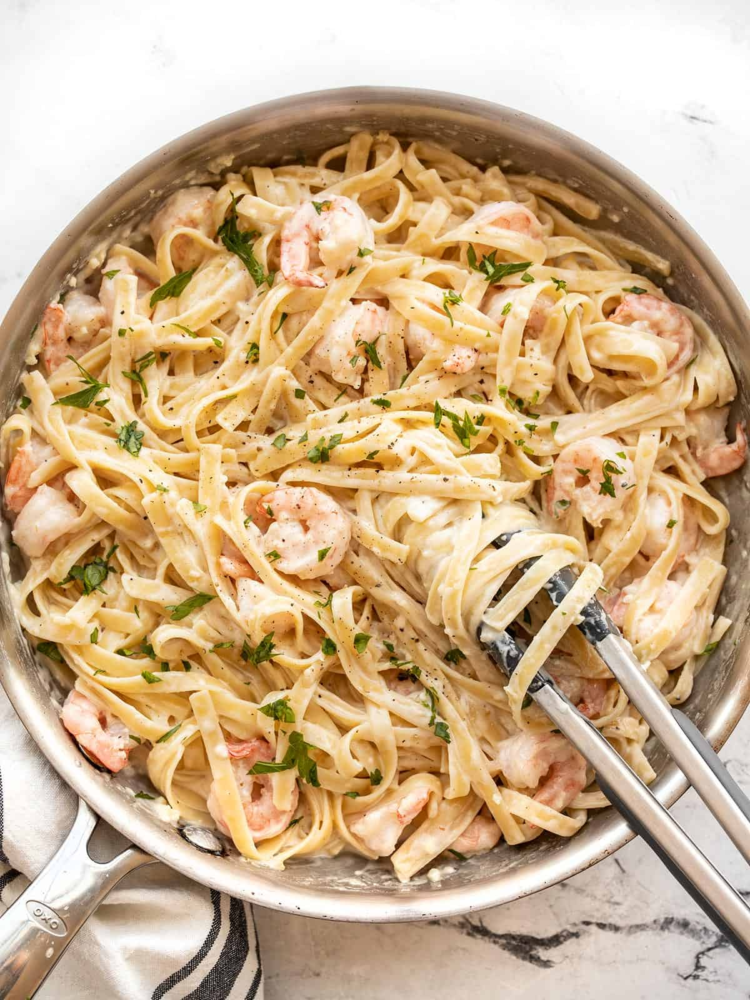

Delicious Shrimp Fettuccine Alfredo

Description
This fast and easy Shrimp Fettucine Alfredo recipe is sure to turn heads at the dinner table! It's fast, easy, and absolutely delicious! Serve with a side salad, bread sticks, or your favorite veggies! This is a recipe the whole family can enjoy!
Ingredients
- 1 pound fettuccini pasta
- 1 tablespoon butter
- 1 pound cooked shrimp - peeled and devined
- 4 cloves garlic, minced
- 1 cup half-and-half
- 6 tablespoons grated Parmesan cheese
- 1 tablespoon chopped fresh parsley
- salt to taste
Steps
- Boil a large pot of water with lightly salted water and bring to a rolling boil
- Cook fettuccine at a boil until tener yet firm to bite, about 8 minutes. Drain
- Heat butter in a large skillet over medium heat. Cook and stir shrimp and garlic in butter for 1 minute. Pour in half-and-half; stir. Add Parmesan cheese, 1 tablespoon at a time, stirring constantly. Mix in parsley; season with salt. Simmer, stirring frequently, until sauce is thickened.
- Stir fettuccine into sauce until evenly coated; serve hot.